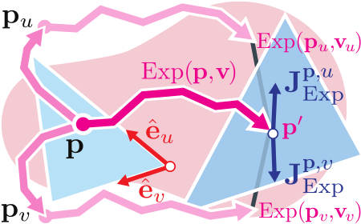
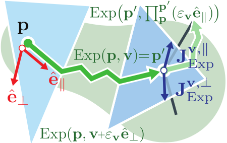

Method Overview
In continuous Riemannian geometry, a geodesic is defined by having zero covariant acceleration:
$$\nabla_{\dot{\gamma}(t)}\dot{\gamma}(t)=0$$
On discrete 3D meshes, this concept is adapted using the angle preservation criteria. To maintain a straight path, the left and right surface angles must remain equal
($\theta_l = \theta_r$) for every point $p$ along the curve as it iteratively crosses faces, edges, and vertices.
Because straightest geodesics consist of piecewise linear segments across discrete faces, the derivative is discontinuous
($\dot{\gamma}_v(t) \notin \mathcal{C}^1$ at face transitions). Standard automatic differentiation also fails due to the discrete combinatorial choices made during the tracing algorithm.
To enable end-to-end backpropagation, we derive two distinct methods for computing the Jacobians $J_{Exp}^v$ and $J_{Exp}^p$.
Extrinsic Proxy (EP)
EP is a fast method that relies on an analytical formulation to approximate gradients with respect to the initial vector $v$. It emulates the tracing result in Euclidean space by using the cumulative rotation $R$ accumulated by the geodesic path:
$$\varphi(p,v) = p_{proxy}^{\prime} = [R^{fix} \cdot (p+v)] + t^{fix}$$
During the backward pass, $R^{fix}$ effectively backward parallel-transports the upstream Jacobian from the destination point $p'$ back to the start point $p$.
Geodesic Finite Differences (GFD)


For applications requiring high accuracy for both $p$ and $v$, we use GFD. This method adapts finite differences to respect the mesh geometry by perturbing inputs along a local non-orthogonal barycentric coordinate system and projecting the results via a pseudoinverse $M^\dagger$.
For example, the Jacobian for $v$ evaluates perturbations along its parallel $\hat{e}_{||}$ and perpendicular $\hat{e}_{⊥}$ axes:
$$J_{Exp}^v \approx M_{p'}^{\dagger} \cdot \left[ \frac{Exp(p, v+\epsilon_v \hat{e}_{||}) - p'}{\epsilon_v} \quad \frac{Exp(p, v+\epsilon_v \hat{e}_{\perp}) - p'}{\epsilon_v} \right]$$